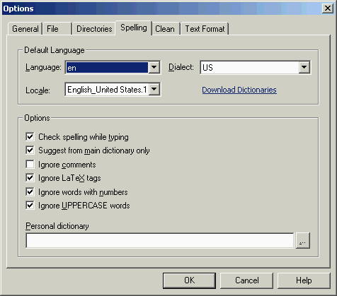

The tab 'Spelling' in the dialog
'Options' allows users to set
spelling and
language options for TeXnicCenter. See
Advanced configuration for
more
information and settings about languages and spelling.

The meaning of the controls is:
- 'Language'
- This drop down list shows all languages of the installed
dictionaries. The language setting only affects the spell checking
functionality of TeXnicCenter. It does not affect the language of the
TeXnicCenter user interface. Changing the language does require a
restart of TeXnicCenter to became effective. The choices are
English (en) and German (de).
- 'Dialect'
- This drop down list shows all dialects available for the selected
language. The dialect setting only affects the spell checking
functionality of TeXnicCenter. It does not affect the language of the
TeXnicCenter user interface. Changing the dialect does require a
restart of TeXnicCenter to become effective.
- 'Locale'
- This drop down list shows the locale setting for the TeXnicCenter
application. Locale information is used to format system messages and
some internal text manipulation. Changing the locale setting does not
change the language of the TeXnicCenter user interface. If the selected
locale is not installed, the default system locale will be used.
- 'Check spelling while typing'
- When selected, TeXnicCenter performs spell checking during data
input. Words not found in the spell checker dictionary are highlighted.
- 'Suggest from main dictionary only'
- When selected, TeXnicCenter suggests only words from the main
dictionary. Words from the personal dictionary will not be included in
the suggestion list.
- 'Ignore comments'
- When selected, TeXnicCenter does not check the spelling of
comments.
- 'Ignore LaTeX tags'
- When selected, TeXnicCenter does not check the spelling of LaTeX
tags. This
setting does not affect spell checking LaTeX command arguments. For
example, the argument of the LaTeX command \caption{This is a caption},
"This is a caption", is always spell checked. This option only
determines whether "\caption" is spell checked.
- 'Ignore words with numbers'
- When selected, TeXnicCenter does not check the spelling of words
containing numbers.
- 'Ignore UPPERCASE words'
- When selected, TeXnicCenter does not check the spelling of words
in
uppercase letters.
- 'Personal Dictionary'
- Contains the path to and the name of the file containing the
personal
dictionary. The personal dictionary contains words not found in the
main dictionary. It is loaded once during application startup and
written once during application shutdown. Clearing the personal
dictionary text field disables the personal dictionary. Changes to
the personal dictionary control do not cause the personal dictionary to
be
reloaded until TeXnicCenter is started next time.
After spell checking has finished, TeXnicCenter saves the words you added to the
dictionary or those you marked as 'ignore' in the project directory.
These words will be considered in future sessions, so that you don't have to mark them again.
Please note that there is a file for each languages. E. g. german files have the
suffix "German". So if you change the language, your words are lost.
If you want to reset or change these dictionaries, just delete or edit them. The first row
contains the number of entries, followed by a corresponding amount of lines, each word takes
one line.
Example with 3 entries
3
first
second
third